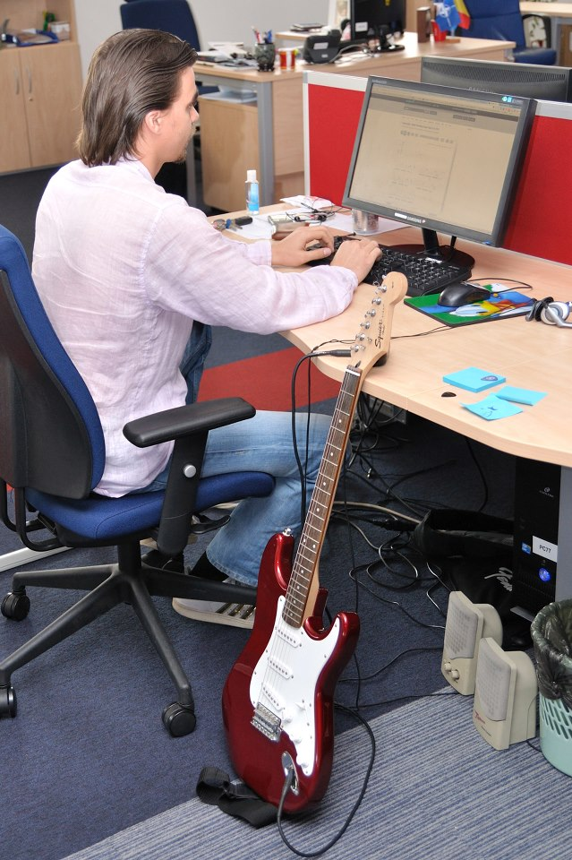
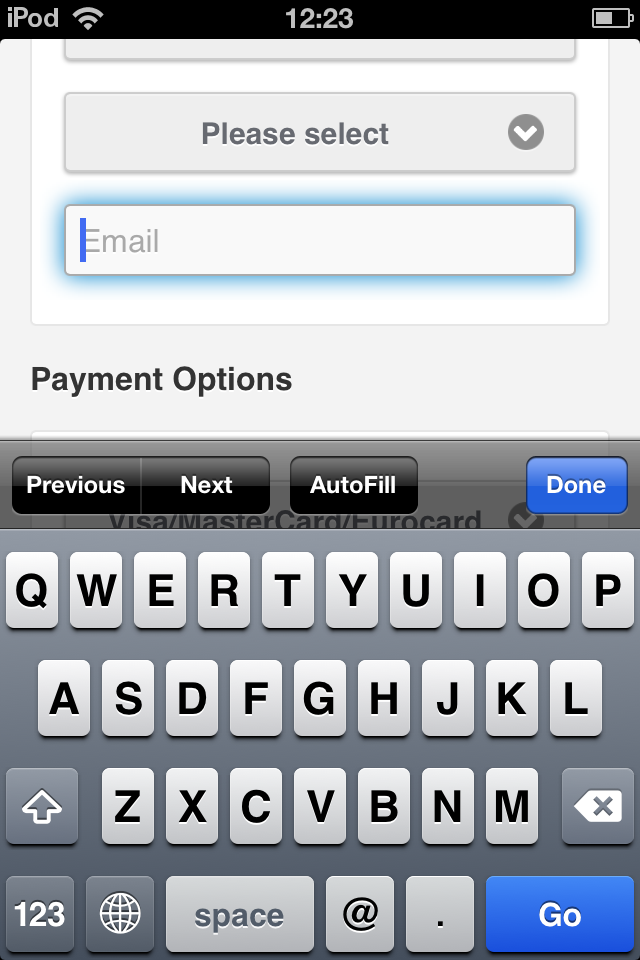

De la site-uri mai performante la jocuri web multiplayer
Serban Ghita
Senior Software Engineer
- 5 ani in Avangate
- 11 ani in IT & eCommerce
- 2002 - primul job in IT
- contribui la proiecte open-source
Despre mine

Despre mine
Despre mine
|  |
Despre mine

Despre mine
Despre mine
Serban Ghita
Senior Software Engineer
In Avangate lucrez in prezent la:
- Control Panel
- Shopping Cart
- Shopping Cart API
Avangate Cpanel

Avangate Cpanel

Avangate Shopping Cart

Serban Ghita
Senior Software Engineer
Proiecte open-source: https://github.com/serbanghita
Sa ne cunoastem
- Cati dintre voi au folosit pana acum HTML5 in productie?
- Cati dintre voi au dezvoltat aplicatii web de tip single-page?
- Cati dintre voi au dezvoltat jocuri web (Flash, HTML5)?
Sumar prezentare
- Ce este HTML5
- Care sunt noile facilitati (markup & APIs)
- Parti bune, care sunt provocarile
- Impactul asupra dispozitivelor clasice si mobile
- Studii de caz
- Exemple concrete folosite de mine
Termeni noi
Ce este HTML5
What is HTML5?
- upgrade for HTML 4.01 and XHTML 1.1
- new HTML tags and attributes
- a new set of APIs for browsers
- different mindset
- departure from 3rd party plugins
What is HTML5?
|
 |
 |
 |
 |
New features

Credits: Sergey Mavrody
Notable markup differences
New and relaxed parsing rules for browsers.
Both <img src="test.jpg" /> and <img src="test.jpg"> accepted.
Notable markup differences
New tags
| <article> | <aside> | <header> | <footer> | <section> | <main> |
| <canvas> | <audio> | <track> | <video> | <embed> | |
| bdi | command |
Notable markup differences
New form controls: email, number, search, url, range, date, time, tel, color
Notable markup differences
New form control attributes: placeholder, pattern, required, list, min, max, step, etc.
Notable markup differences
New attributes: charset (on meta), async (on script)
Notable markup differences
Custom attributes: data-*. Set: data-userid="1234" Get: elem.dataset.userid
HTML markup
HTML Markup
New tags compatibility
 |
 |
 |
||
| 28 | 23 | 17 | 9 | 5.1 |
HTML Markup
New tags compatibility.
What about legacy browsers?
HTML Markup
Microdata
- Article
- Book Reviews
- Events
- Local Businesses
- Movies
- Products
- Restaurants
- Software Applications
- TV Episodes
Notable APIs
Notable APIs
- Canvas 2D - var ctx = canvasElem.getContext('2d');
- Web Storage - window.localStorage
- Offline Web Applications - window.applicationCache
- Geolocation - navigator.geolocation
- Device orientation event - deviceorientation
- Touch events - touch(start|end|move|cancel)
- User media - video, audio, x-webkit-speech
Notable APIs
Web Storage, Touch Events, Offline Web Applications
Live Demo: Chess Web Application
Source: GitHub
Case studies
- Avangate Mobile Shopping Cart
- Avangate Visitor Web App
- Chess Web App
- Cut the Rope
- My multiplayer game
Case studies
Avangate Mobile Shopping Cart
Case studies
Avangate Mobile Shopping Cart
Case studies
Avangate Mobile Shopping Cart
Case studies
Avangate Mobile Shopping Cart
Case studies
Avangate Mobile Shopping Cart